In this part of the project, I manually defined pairs of corresponding points on images of Drake and Barack Obama using the class-provided online labeling tool. I marked key facial features like the eyes, nose, mouth, and chin to ensure precise alignment for smooth morphing. For consistent labeling, I manually mapped each point on Drake’s face to its equivalent on Obama’s. After labeling, I computed the Delaunay triangulation on the mean of both point sets.
Delaunay triangulation connects points to form triangles such that it maximizes the minimum angle of each triangle to prevent thin or elongated triangles.
Images:
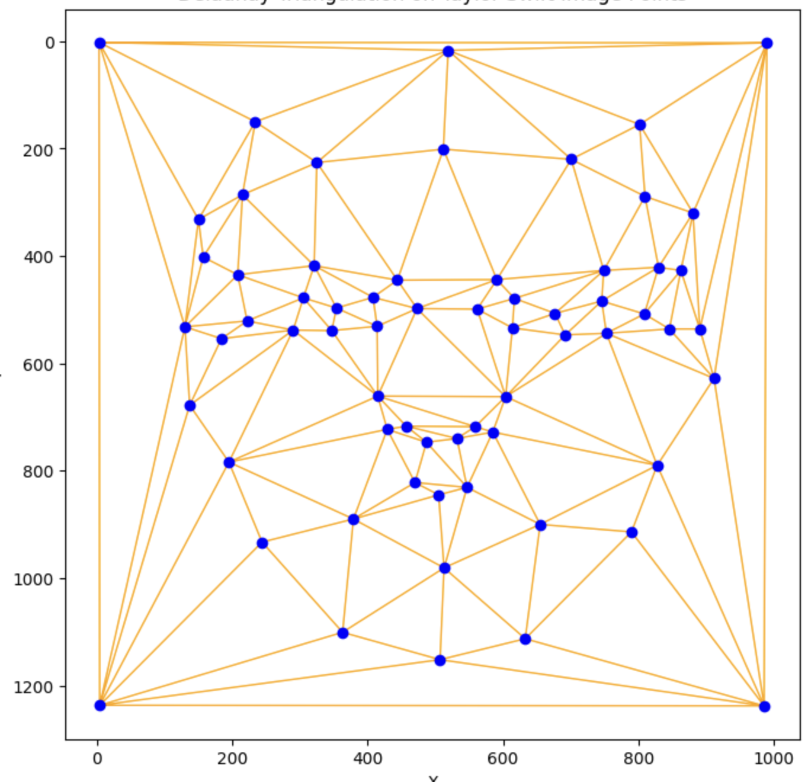
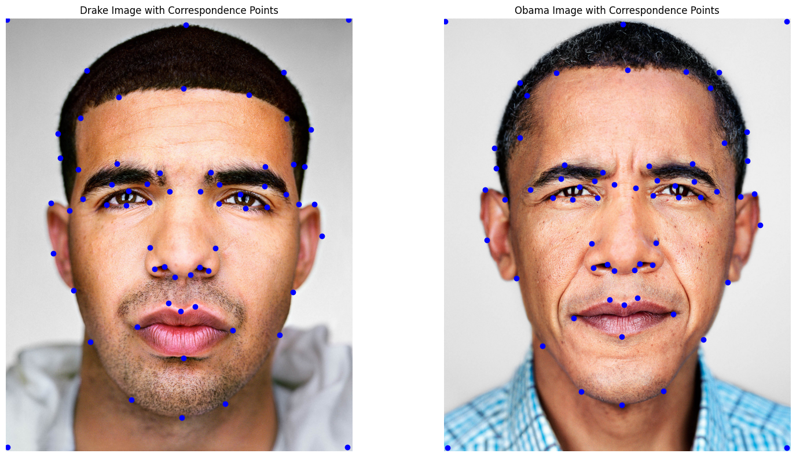
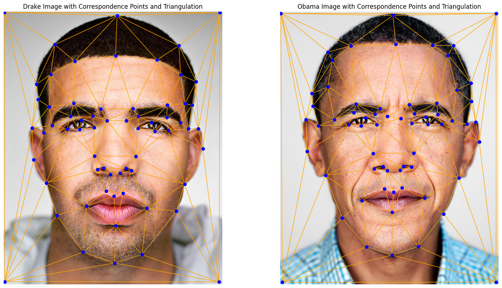
In this part, I implemented the mid_way_face function, which combines two faces (Drake and Obama) to create a blended mid-way face. First, I calculated the average shape by taking the mean of the corresponding keypoints from both images. Next, I warped each face to match this average shape using affine transformations. Lastly, I cross-dissolve the two warped images to get the final mid-way image.
computeAffine(tri1_points, tri2_points):
For the computeAffine function, it calculates a 2x3 affine transformation matrix that maps a triangle from one face to a corresponding triangle in the average shape. I then constructed a linear system using the triangle coordinates and solved for the affine matrix to make sure the transformation accounts for both scaling and translation.
2. Warp Each Face to the Average Shape:
For each triangle, I computed the inverse of the affine matrix A. Then, I used inverse-warping to find the corresponding "source points" in the original image for each pixel in the average shape. These source points often resulted in non-integer coordinates, so I applied bilinear interpolation to get a smooth combination of pixel values from the source image.
To make sure that only the current triangle was affected, I created a mask using the polygon vertices of the triangle in the average shape with skimage.draw.polygon. The mask isolates the region to be warped and prevents overlapping effects from other triangles. I repeated this process as I looped over each triangle in the triangulation to warp both Drake’s and Obama’s faces to the average shape.
After warping both faces to the average shape, I cross-dissolved the images by averaging the pixel values of the two warped faces. This blending step combined the colors and textures of both Drake’s and Obama’s faces, resulting in a mid-way face that captures characteristics from both individuals.
Images:
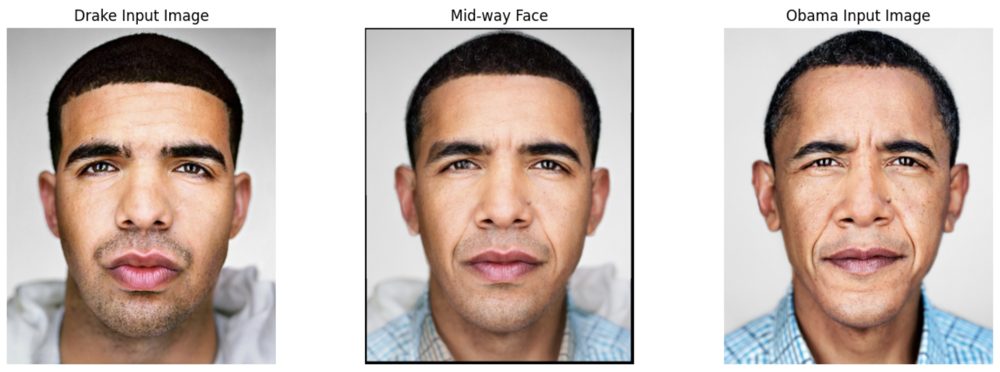
In this part of the project, I implemented a morph function to warp between the faces of Drake and Barack Obama.
To do this, I:
The morph(im1, im2, im1_pts, im2_pts, tri, warp_frac, dissolve_frac) function takes in two images and their corresponding keypoints. It produces a morphed image by combining shape and color information from both images based on the warp_frac and dissolve_frac parameters, which range from 0 (original face) to 1 (target face).
For each frame, the intermediate shape is calculated as a weighted average of the keypoints from both images using the formula:
intermediate_shape = (1 - warp_frac) * im1_pts + warp_frac * im2_ptsSimilar to the previous part, each frame computes an affine transformation matrix for each triangle in the Delaunay triangulation of the average shape. The matrix maps the triangles in both images to their respective positions in the intermediate shape. Using inverse warping, each pixel in the intermediate shape is mapped back to the corresponding source pixel in the original images.
After warping both images to the intermediate shape, I blend them using cross-dissolving. The pixel values are averaged based on the dissolve_frac parameter:
morphed_im = (1 - dissolve_frac) * im1_warped + dissolve_frac * im2_warpedMorph Sequence GIF:
Morph Sequence SubImages:
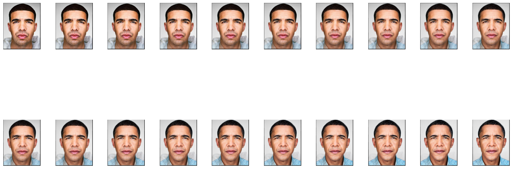
In this part of the project, I got my images from the Brazilian FEI Face Dataset and used the pictures of female faces (no expression), to compute the average Brazilian female face. I achieved this by first calculating the average face shape and then morphing each individual face in the dataset into the average shape. Finally, I warped my own face onto the average shape to visualize how my features align with the population's mean face.
Like previous parts, I loaded the images and their respective keypoints and computed the average face shape by taking the mean of the corresponding keypoints across all the images.
Using the computed average shape, I morphed each face in the dataset to match the average shape, similar to the previous sections. However, to increase precision, I manually looped through all the keypoints files and added the coordinates of the 4 corners of the images as points to improve warping.
Images:
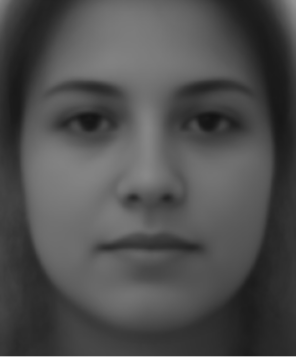
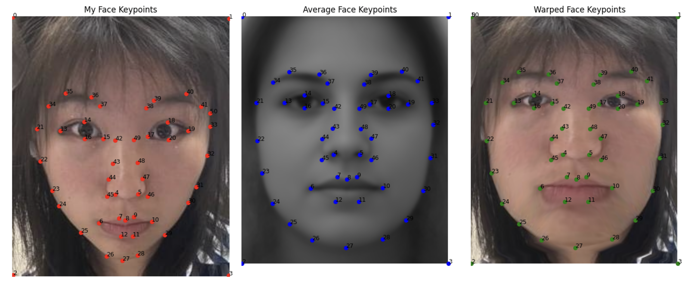
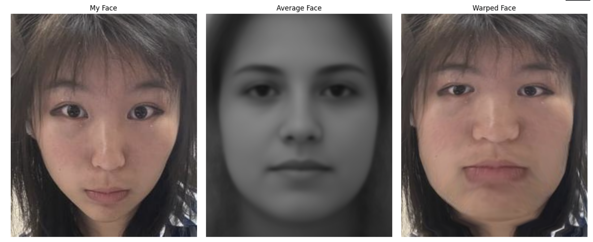
In addition, I also performed the reverse operation: The Average Brazillian Face Warped Onto My Face
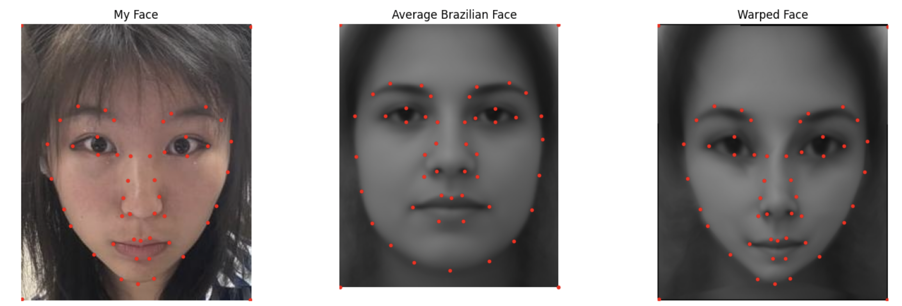
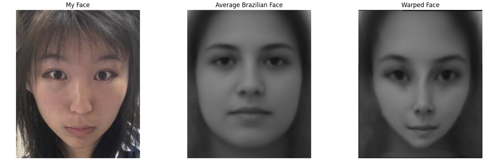
Here are some of the results of the average Brazillian face warped onto some of the images I used for my dataset.
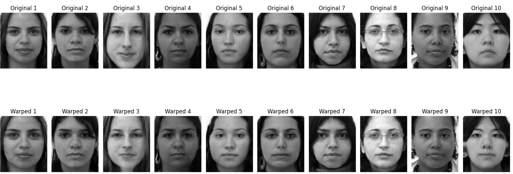
Here, I created a caricature of my face by manipulating my keypoints relative to the average Brazilian face keypoints and exaggerated the differences using a scaling factor called alpha.
Exaggerating Features Using alpha:
I started by calculating the difference between my facial keypoints (my_keypoints) and the average Brazilian keypoints (average_keypoints):
diff = brazilian_pts - my_keypoints
The variable diff represents how each of my facial features differs from the average face. A positive difference means my feature is larger or further away from the average, while a negative difference means it is smaller or closer.
To create an exaggerated caricature, I amplified these differences using an alpha factor:
exaggerated_brazilian_pts = brazilian_pts + alpha * diff
The alpha value determines the degree of exaggeration:
alpha = 1: No exaggeration occurs, as exaggerated_brazilian_pts is exactly the same as brazilian_pts.alpha > 1: Features are pushed further away from the mean, creating a more exaggerated caricature. For example, alpha = 1.5 means each feature is moved 50% further away from the average shape, resulting in a more pronounced caricature.0 < alpha < 1: Features are pulled closer to the average shape, producing a subtler caricature effect.Caricature Image (alpha = 1.5):
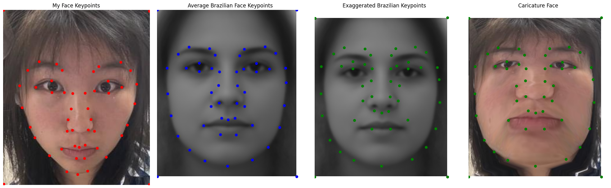
For the bells and whistles, I made a music video that morphs the faces of female celebrities that I obtained from Martin Schoeller's website.
Video (Turn Sound On!!):
CS180/280A - Project 3 | October 2024 | Author: Annie Zhang